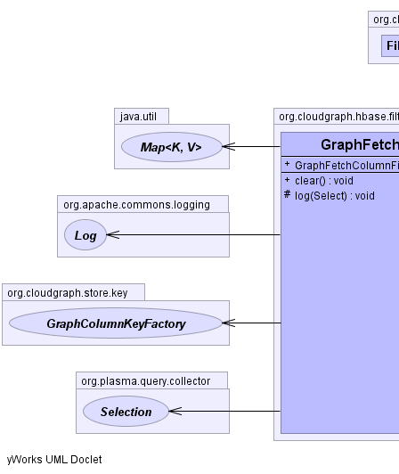
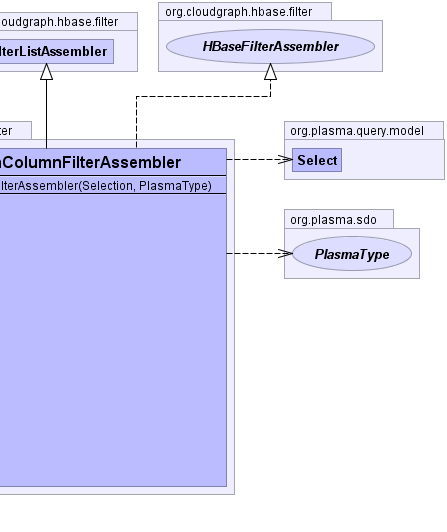

public class GraphFetchColumnFilterAssembler extends FilterListAssembler implements HBaseFilterAssembler
GraphColumnKeyFactory,
InitialFetchColumnFilterAssembler|  |  |
params, rootFilter, rootType| Constructor and Description |
|---|
GraphFetchColumnFilterAssembler(org.plasma.query.collector.Selection selection,
org.plasma.sdo.PlasmaType rootType) |
| Modifier and Type | Method and Description |
|---|---|
void |
clear()
Frees associated resources
|
protected void |
log(org.plasma.query.model.Select root) |
getFilter, getParamsclone, equals, finalize, getClass, hashCode, notify, notifyAll, toString, wait, wait, waitgetFilterpublic GraphFetchColumnFilterAssembler(org.plasma.query.collector.Selection selection,
org.plasma.sdo.PlasmaType rootType)
public void clear()
Assemblerclear in interface Assemblerclear in class FilterListAssemblerprotected void log(org.plasma.query.model.Select root)
CloudGraph® is a registered trademark of TerraMeta Software, Inc. Copyright © 2014 - All Rights Reserved.